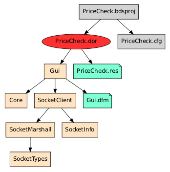
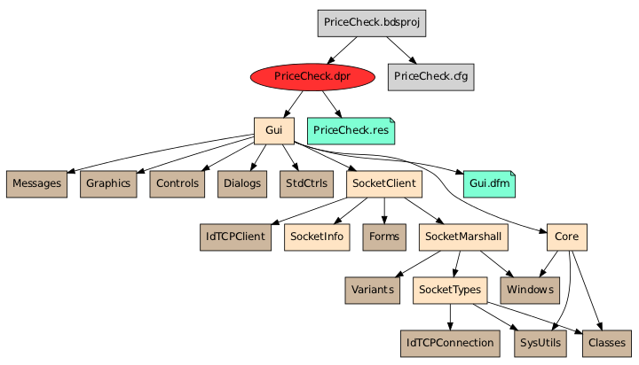

Tracing programs
To trace a program is to start from a Program file (or Library/Package)
and discover which files it refers to (depends on). Then, with each of those
files we repeat the process recursively until, in the end, we have the complete
dependency graph of the program.
Depending on the type of file, however, dependencies can be declared in different ways.
Tracing a DelphiProjectGroup
This is an xml file and dependencies are listed like so:
<BorlandProject>
...
<Default.Personality>
<Projects>
<Projects Name="Flagship.exe">Flagship.bdsproj</Projects>
<Projects Name="Sideshow.exe">Sideshow.bdsproj</Projects>
<Projects Name="Targets">Flagship.exe Sideshow.exe</Projects>
</Projects>
...
</Default.Personality>
...
</BorlandProject>
The dependencies are Flagship.bdsproj and Sideshow.bdsproj.
Tracing a DelphiProject
This is an xml file and dependencies are listed like so:
<BorlandProject>
...
<Delphi.Personality>
<Source>
<Source Name="MainSource">Flagship.dpr</Source>
</Source>
...
<Directories>
...
<Directories Name="SearchPath">..;..\..\Lib</Directories>
...
</Directories>
</Delphi.Personality>
...
</BorlandProject>
The dependency is Flagship.dpr.
In addition, the SearchPath is of vital importance, because it tells us
about the locations in which we shall find all the sources of the program, in
the event that they are not all in the same directory.
Tracing source code
Source code files have different types of dependencies.
Uses (file types: Unit, Program, Library)
The most important type of dependency is a dependency on another Unit and is
declared as follows.
uses
Forms,
MainWindow in '..\MainWindow.pas' {FormWindow};
This file depends on Forms (found in Forms.pas) and MainWindow (found in
..\MainWindow.pas).
Contains (file types: Package)
This statement declares the exports of a package:
contains
uPSC_extctrls in 'uPSC_extctrls.pas',
uPSC_forms in 'uPSC_forms.pas';
Resources (file types: Unit, Program, Library, Package)
Resources are declared with a preprocessor statement:
{$R *.res}
{$R *.dfm}
{$R '..\Source\SynEditReg.dcr'}
{$R 'UserControls\ucMenu.TucMenu.resources' 'UserControls\ucMenu.resx'}
The asterisk is not a wildcard, it will only match a single file, so if this
statement is found in a file MainWindows.pas, the Resource is called
MainWindow.res.
File includes (file types: Unit, Program, Library, Package)
FileIncludes are declared with a preprocessor statement:
{$I vars.pas.inc}
Binary objects (file types: Unit, Program, Library)
BinaryObject files are declared with a preprocessor statement (the two
variants are equivalent):
{$L file.obj}
{$LINK file.obj}
Limitations to tracing
CompiledUnits
delpy can only find dependencies in source code, so once a CompiledUnit is
reached, it cannot be traced to discover its dependencies. This means that if
you want to use a program graph to find all the sources of a program you have
to set up the search path to point to the source code of all your libraries.
Once you have a program graph it's easy to check if any .dcu files are
present just by listing all the files (see below).
Preprocessor statements
Tracing source code is not fully accurate since Delphi code contains
preprocessor statements. A uses statement like the one below cannot be parsed
correctly without first evaluating the preprocessor code.
uses
{$IFDEF DEBUG}
Testing,
{$ELSE}
Production,
{$ENDIF}
Windows;
But this evaluation
takes place at compile time, at which point the symbol DEBUG will either be
set or not, depending on the compiler flags (and it may differ between
successive compilations). Thus we cannot evaluate this statement while tracing,
and all we can do is treat the preprocessor directives as comments and
thus treat both Testing and Production as dependencies even though no
build of this program will include them both.
This will produce false positives when the graph is used to verify that all files in the graph are present on the filesystem.
To obtain a completely accurate graph, preprocess the source code first.
Producing program graphs
The product of a program trace is a program graph, written to disk as a
.graph file. To visualize the graph, the tool viewgraph.py produces a graph
that is rendered using graphviz to a .pdf file and displayed in a pdf viewer.
You can pick any file as the starting point of a trace, but to obtain a graph
of the whole program you have to start from a Program file (or
Library/Package). If codebase also contains a DelphiProject for the
program, use that instead to make sure the trace can find all the sources.
Default view
A typical graph looks like this:
$ viewgraph.py PriceCheck.bdsproj

File extensions are not shown for Units.
With resources
By default viewgraph.py filters out certain types of files (they are part of
the graph but not present in the picture to make it simpler):
$ viewgraph.py --help
...
Options:
...
--all don't filter any files (below)
--dcu default
--no-dcu
--obj
--no-obj default
--stdlib
--no-stdlib default
--resources
--no-resources default
Running with the --resources flags we can make the Forms and Resources appear
too:
$ viewgraph.py PriceCheck.bdsproj --resources

Exhaustive graph
Finally, for an exhaustive view we can pass the --all flag to also show files
from the standard library:
$ viewgraph.py PriceCheck.bdsproj --all

CompiledUnits are shown in a darker shade than Units.
Using the program graph
Once we have produced a program graph, we can use it to find out things about the program.
We can check where the codebase is on disk:
$ viewgraph.py /tmp/.PriceCheck.bdsproj.graph --ls-abspath
/home/frank/code/samples/pricecheck
We can list all the files (their path is relative to the absolute path of the codebase and to the root of the graph, ie. the first file that appears here):
$ viewgraph.py /tmp/.PriceCheck.bdsproj.graph --ls --all
PriceCheck.bdsproj
PriceCheck.dpr
../../dcc32/lib/Forms.dcu
Gui.pas
../../dcc32/lib/Windows.dcu
../../dcc32/lib/Messages.dcu
../../dcc32/lib/SysUtils.dcu
../../dcc32/lib/Variants.dcu
../../dcc32/lib/Classes.dcu
../../dcc32/lib/Graphics.dcu
../../dcc32/lib/Controls.dcu
../../dcc32/lib/Dialogs.dcu
../../dcc32/lib/StdCtrls.dcu
Core.pas
SocketTypes.pas
../../dcc32/lib/Indy9/IdTCPConnection.dcu
SocketMarshall.pas
SocketClient.pas
../../dcc32/lib/Indy9/IdTCPClient.dcu
SocketInfo.pas
Gui.dfm
PriceCheck.res
PriceCheck.cfg
We can look up the search path:
$ viewgraph.py /tmp/.PriceCheck.bdsproj.graph --ls-searchpath
../HtmlLib
C:\ZipLib
And we can look up the path to the standard library:
$ viewgraph.py /tmp/.PriceCheck.bdsproj.graph --ls-stdlibpath
../../dcc32/lib
../../dcc32/lib/Indy9
Detecting common problems in program graphs
viewgraph.py can diagnose some basic problems in program graphs. Run it with
the --lint flag on a file to trace, or on an existing .graph file:
C:\code> viewgraph.py PriceCheck.bdsproj --lint
Searchpath paths not relative:
* C:\ZipLib
Files not found:
* Gui.dfm
The first warning concerns the search path, which is defined in the
PriceCheck.bdsproj like this:
<Directories Name="SearchPath">..\HtmlLib;C:\ZipLib</Directories>
Here the first path is relative, the second is absolute. This is a problem waiting
to happen, because if ever the codebase is traced or compiled on a different
machine, the path C:\ZipLib may not be present. It is much preferable to
co-locate all the libraries with the codebase and make the search path
relative.
Non-relative paths on the search path can also break tracing/compilation on Cygwin/Linux.
If you traced the program some time ago and you want to check if all the files
are still on disk, use the --verify flag (set --all to check all files):
$ viewgraph.py --verify --all /tmp/.PriceCheck.bdsproj.graph
Files not found:
* Gui.dfm